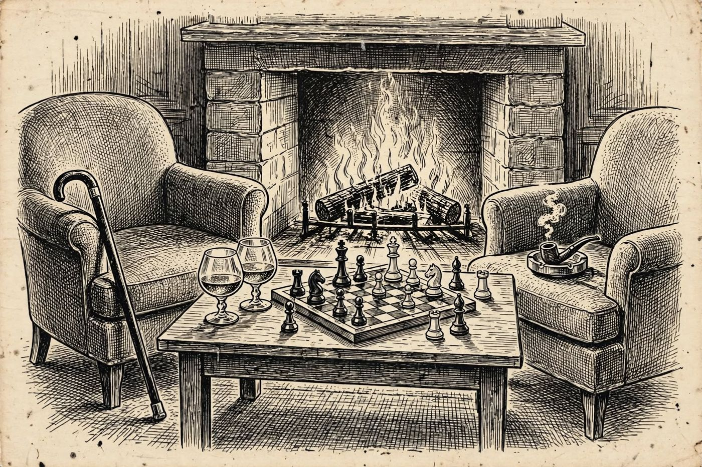

12 de diciembre
Dos viejos mentirosos
Libro · págs. 50-53
Audio del día
Transcripción
«Querida criatura, la policía de montaña es tan aburrida... Les propongo un juego de mi juventud en Ginebra: 'Caballeros y Bribones'. Durante esta conversación, uno de nosotros dirá únicamente la verdad absoluta y el otro mentirá en cada sola palabra. Averigüe quién es quién, detective. Si logra descubrirlo, sabrá exactamente quién estuvo fuera de la biblioteca y quién guarda la ampolla que falta.»

Intenta resolverlo primero. Abre solo lo que necesites, en este orden.
1Pista sutil
Analiza las declaraciones iniciales C1 y K1. Si Lady Cordelia fuera la bribona (mintiéndote), Kessler tendría que ser caballero; pero si Kessler fuera caballero, su afirmación K1 ("Los dos somos caballeros") sería una mentira, lo cual es imposible. Por tanto, Cordelia DEBE ser la caballera.
2Comprobación parcial
Lady Cordelia es la Caballera (sus frases son todas verdaderas) y el Dr. Kessler es el Bribón (sus frases son todas falsas).
3Pista fuerte
Si Cordelia es la bribona, C1 sería falsa y Kessler un caballero, pero entonces K1 («los dos somos caballeros») sería falsa en boca de un caballero: imposible. Por tanto, Cordelia es la caballera y Kessler, el bribón. Ahora invierte cada afirmación de Kessler (todas son falsas) y toma tal cual las de Cordelia.
4Solución oficialSpoiler si no lo has intentado
Evaluación de frases:
Kessler miente al decir que no salió de la biblioteca (K2 es falsa → Sí salió).
Kessler miente al decir que Cordelia estuvo despierta toda la partida (K3 es falsa) y que él dormitó (K4 es falsa). Por tanto, la persona que dormitó fue Cordelia.
C3 es verdadera: La ampolla de digoxina la tiene quien dormitó (Cordelia).
Para el desenlace de la historia, vuelve al libro: la sección de soluciones está al final.